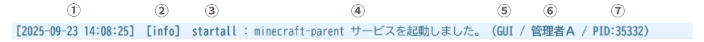
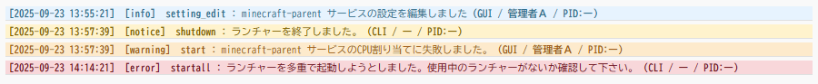
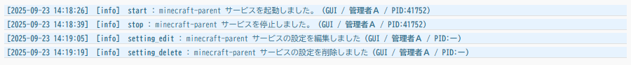
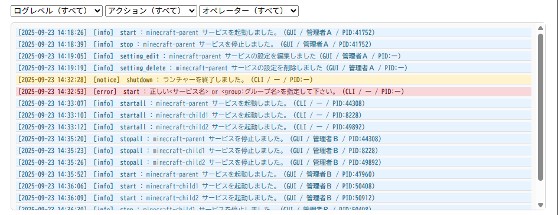
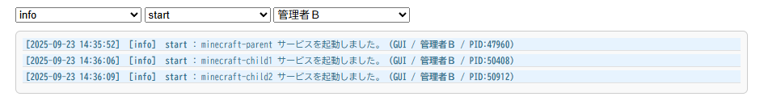

【ランチャーログ】
はじめに
初回接続時には最大100件の過去ログを取得でき、ログレベルやアクションタイプ、オペレータ名などの情報を色分け表示で直感的に把握できます。
本記事では、ランチャーログに記録される項目や色分けルール、フィルタリング機能を中心に解説します。
ログに記録される項目
ランチャーログには、以下の情報が1行ごとに記録されます。

ランチャーログ１行分のレイアウト
- ①日付：ログが記録された日時
- ②ログレベル：info／notice／warning／error などの重要度
- ③アクションタイプ：サービス起動（start）、停止（stop）、設定編集（setting_edit）、設定削除（setting_delete）など
- ④ログの内容：操作やイベントの詳細メッセージ
- ⑤via：操作経路（GUI／CLIなど）
- ⑥オペレータ名：操作を実行したユーザー名
- ⑦プロセスID：関連するプロセスの識別子
ログレベルと色分けルール
ログはレベルごとに文字色と背景色が設定されており、視覚的に重要度を判別できます。

ログレベルによる色分け
- info：文字色は濃い青系、背景は淡い水色
- notice：文字色は濃い黄土色、背景は淡い黄色
- warning：文字色は赤みを帯びた茶色、背景は淡いオレンジ
- error：文字色は濃い赤茶、背景は淡い赤
アクションタイプの種類
ログには、ランチャーが実行した具体的なアクションタイプが記録されます。代表的なものは以下の通りです。

ログはアクション単位で記録される
- start：サービスの起動
- stop：サービスの停止
- setting_edit：サービス設定の編集
- setting_delete：サービス設定の削除
フィルタリング機能
ランチャーログには、複数条件を組み合わせて絞り込みができるフィルタリング機能があります。プルダウンメニューから以下の条件を選択可能です。

フィルタリング前

フィルタリング後
- ログレベル：info／notice／warning／error
- アクションタイプ：start／stop／setting_edit／setting_delete など
- オペレータ名：特定のユーザーによる操作のみを抽出
おわりに
ランチャーログは、GUIランチャーにおける操作履歴を一元的に管理するための重要な機能です。
色分けによる直感的な判別、アクションタイプやオペレータ名でのフィルタリングにより、運用者は効率的にトラブルシュートや監査を行えます。
他の機能（リソース監視やカスタムモニタリング）と組み合わせることで、より強力な運用基盤を構築できます。
色分けによる直感的な判別、アクションタイプやオペレータ名でのフィルタリングにより、運用者は効率的にトラブルシュートや監査を行えます。
他の機能（リソース監視やカスタムモニタリング）と組み合わせることで、より強力な運用基盤を構築できます。